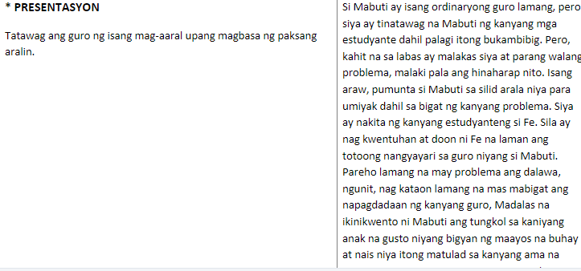
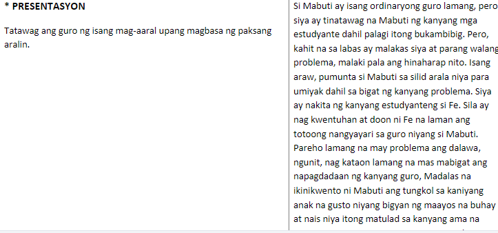

Page 2
Video of Non-Digital
or Conventional Material


Page 3
Sample IMs According to your Specification
Based on Edgar Dale's Cone of Experiences


Page 4
Sample Assessment
Please click every image you want to redirect to
Google Form

Quizizz Web App

Page 4
A Detailed Lesson Plan in Filipino
I. |
Objective: At the end of this lesson, the students will be able to; 1. Identify the statement that show cause and effect relationship. 2. Read a poem correctly and clearly with expression. 3. Apreciate the massage of the song. 4. Apply this poem to a real life situation. |
II. |
Subject Matter Maikling KwentoAng DurianReference Materials: Visual Aisds, Video Presentation |
III. |
Procedures |
A. Learning Task
|
(Paglilinis ng Silid Aralan) |
(Daily cleaners) |
|
“Magandang Umaga sa inyong lahat!” |
Magandang umaga po ma'am magandang umaga klasemate nagagalak akong makita kayo. |
|
“binibining Kie Pamunuan ang Pagpapasalamat sa panginoon”. |
Iyuko ang mga ulo at damahin ang presensya ng ating panginoon (Taintim na nagdarasal) |
|
“ngayon mag si upo at kapagnarinig ang inyong pangalan sabihin ang Narito po ma'am”. |
(Lahat ng studyante ay nagsabi ng narito po) |
|
“kumuha ng papel at isulat ang mga naiisip ninyong maiikiling kwento na inyong narinig at pumukaw sa inyong attensyon na nagbigay kakintalahan sa inyo” |
(Kumuha ng papel at sumulat) |
|
Kapag tapos na ay tatawag ako ng dalawa sainyo na magbabahagi sa harap ng klase. |
"Mabuti naman po ma'am” Opo ma'am |
|
“Ngayon sino ang makakapagbahagi kung ano ang mga tinalakay natin noong nakaraan" (Binibining dell) |
Ako po ma'am Ang ating tinalakay nong nakaraan ay tungkol sa nobela na kung saan ibinahagi po ninyo ang isang magandang nobela na nakapagbigay kakintalan saamin ang nobela pong ito ay ang nobela ng ating bayani na si dr. Jose P. Rizal Nole me tangere at ang el fili na nakapagbigay tanaw sa panahon ng kastila. |
|
“magaling! binibining dell ang iyong ibinahagi ay talaga namang napakahusay nakikita ko na nakinig talaga kayo saaking itinalakay” |
Tahimik na nakikinig |
|
Ngayon akin ng ibabahagi ang isa rin sa mga magandang pagaralan na makapagbibigay kakintalan sa ating kaisipan ang maikling Kwento. |
|
|
Pagpresenta ng Video at pagpapaliwanag ng Power Point Presentation |
IV. Assignment
Magsaliksik ng mga maiikiling kwento na isinulat sa panahon ng amerikano. Kinabukasan ito ay ating tatalakayin
MAIKLING KUWENTO
Ang aking repliksyon ang maikling kwento ay isang akdang pampanitikan sa tuluyan na sa pamamagitan ng mga pangungusap at talata’y binubuo ng may-akda. Ang mga sakiling nito ay ang Tagpuan Tauhan banghay Narito rina ng bahagi ng maikling kwento panimula pagkilala sa tauhan suliranin kakintalan paglalarawan sa tauhan tunggalian kasukdulan at wakas dito nakapaloob ang bawat nilalaman ng maikling kwento may ibat ibang uri din ng tula kwento ng pag ibig kwento ng pakikipagsapalaran maromansang pakikipagsapalaran kwento ng madulang pangyayari katatawanan kwento ng katatakutan kwento ng tauhan makabanghay at katutubo o kapaligiran. Dito may isang halimbawa akong ibinahagi ang kwneto ng durian na kung saan may mga bagay na nagmumula sa mga haka haka lamang ng tao
Ano ang Maikling Kwento?
Ito ay isang akdang pampanitikan sa tuluyan na sa pamamagitan ng mga pangungusap at talata’y binubuo ng may-akda upang sa kanyang kapangyarihan at kakayahan bilang isang alagad ng panitikan, mailahad niya ang isang pangyayari sa buhay ng pangunahing tauhan, makapagkintal ng isang bisa sa puso at diwa ng mga mambabasa. Ito ay likha ng bungang-isip na hango sa isang bahagi ng buhay na tunay na nangyari o maaaring mangyari. Sapagkat ito’y may makitid na larangan, mabilis na galaw kaya’t tuluy- tuloy ang pagsasalaysay, matipid at payak ang mga pangungusap, kakaunti ang mga tauhan na lagi nang may pangunahing tauhan,payak o karaniwan ang paksa, maikli ang panahong sinasakop…ang maikling kuwento ay madaling maunawaan, kaya’t masasabing angkop sa lahat, lalo na sa mga taong mahilig magbasa ngunit kapos sa panahon.
Mga salik/ Sangkap ng Maikling Kwento
Tagpuan – Tumutukoy ito sa pook at panahong pinangyarihan ng mga tagpo sa akda, naglalarawan ito ng ginagalawan o kapaligiran ng mga tauhan. Inilalarawan ito nang buong linaw, pati na ang kaugalian ng mga nasa kapaligiran ay masisinag sa mabisang pamamaraan.
Tauhan – Kaunti lamang ang mga tauhan ng maikling katha bagama’t laging may pangunahing tauhan. Ang iba pa sa kuwento ay tumutulong lamang sa lalong ikatitingkad ng pagganap ng pangunahing tauhan sa akda. Sa kanyang ga- law at ugali nakasalalay nang malaki ang kagandahan ng akda. Kailangang siya’y maging tunay at buhay. Siya at ang iba pang tauhan ay inilalarawan nang di-tuwiran. Makikilala sila sa pamamagitan ng kanilang panlabas na kaanyuan – pisikal at pananamit, kilos na magpapahiwatig ng kanilang ugali at pili ng mga salita.
Banghay – Tumutukoy ito sa pagkakasunud-sunod ng mga pangyayari. Dapat itong maging maayos at magkakaugnay upang maging matatag at kapani-paniwala. Gaano man kapayak o karaniwan ang mga pangyayari, ang pagiging kawili-wili nito ay nakasalalay sa makatwirang pagkakasunud- sunod na “magpapadulas sa daloy ng salaysay.
Mga bahagi ng Maikling Kwento
-
Panimula Sa bahaging ito paaasahin ng may-akda ang mga mambabasa sa isang kawili-wili at kapana-panabik na akda. Humigit-kumulang, ang mga sumusunod ay nakapaloob sa mga unang talata ng akda:
-
Pagpapakilala sa mga Tauhan - maipabatid ang kanilang pagkatao ng pangunahing tauhan; ma- pangibabaw ang katangian ng pangunahing tau- han upang magkagiliw agad sa kanya ang mga mambabasa
-
Pagpapahiwatig ng Suliraning Kakahaharapin ng mga Tauhan - kailangang palitawin ang suliranin ng pangunahing tauhan upang maitanim sa isipan ng mga mambabasa na sa kanya iinog ang mga susu- nod pang pangyayari
-
Pagkakintal sa Isipan ng mga Mambabasa ng Damdaming Palilitawin sa Kuwento - ang lahat ng mga pangyayari at tauhan sa akda ay kailangang isang damdamin lamang ang antigin sa mga mambabasa
-
Di Paglalarawan ng Tagpuan - sa di-tuwirang pama- maraan, magagawa ng may-akdang madama ng mga mambabasa ang kapaligirang gagalawan ng mga tauhan lalo ng ng pangunahing tauhan sa ak- da; mahalaga ito upang madaling matiyak ng mga mambabasa ang suliraning kahaharapin ng pangu- nahing tauhan at ang damdaming nasang maantig sa mambabasa
-
-
Tunggalian - Ito ang nagbibigay-daan sa madudulang tagpo upang lalong maging kawili-wili at ka- pana-panabik ang mga pangyayari kaya’t si- nasabing ito ang sanliga ng akda. Nagsisimu- la ito sa paghahangad ng pangunahing tauhan na hahadlangan ng sinuman o anuman sa ka- tuparan. Ang sagabal o katunggaling lakas ay dapat na nababagay sa kahalagahan ng layunin; at dapat na magdulot ng pananabik at kasiyahan sa mga mambabasa sa dakong huli.
-
Kasukdulan - Dito nagwawakas ang tunggalian. Pinaka- masidhing pananabik ang madarama ng mga mambabasa sa bahaging ito sapagkat dito pagpapasyahan ang kapalaran ng pangunahing tauhan o ng bayani sa kuwento. Subalit bago sumapit ang pinakarurok na ito ng kasabikan, kailangang magduyan muna ang pananabik ng mambabasa sa isang lundo na sa ilang saglit, mabibitin ang tinurang pananabik sa kahihi- natnan ng pangunahing tauhan.
-
Wakas - Bagama’t ang isang maikling kuwento ay maaari nang magwakas sa kasukdulan, may mga pagkakataong kailangan pa rin ang isang katuusan upang ipahayag ang mga pangyaya- ri pagkatapos ng kasukdulan. Maaari ritong ipaloob ang paliwanag o pahiwatig sa tiyak na sinapit ng pangunahing tauhan sa halip na ipaubaya na lamang sa mga mambabasa.
Mga uri ng maikling kwento
- Kwento ng Pag-ibig
- Kwento ng Maromansang Pakikipagsapalaran
- Kwento ng Madulang Pangyayare
- Kwento ng Katatawanan
- Kwento ng Katatakutan
- Kwento ng Tauhan
- Kwentong Makabanghay
- Kwentong ng Katutubong Kulay/Kapaligiran
Page 5
Lesson Plan


 



Page 6
Demo Teaching


Reflection
Individual reflections about the activities you did and about the subject Prof Ed 7